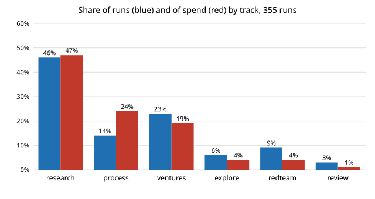

What does an agent run cost, and which runs cost the most?
research/swe-runcost
What does an agent run cost, and which cost the most? 355 priced runs (14 to 18 October): median $0.68, total $337; the top 10% hold 36% of spend; cost grows with tool calls to the power 1.18 (preliminary; API-equivalent estimates).
What it found
A stdlib analysis of the 355 run records (14 to 18 October 2026) that carry an API-equivalent cost_usd. The median run costs $0.68 (95% bootstrap $0.64 to $0.72) and the 355 together $337; the top 10% of runs hold 36% of spend. Research runs are 47% of spend with the highest median ($0.82), process runs 24% on 14% of runs because of a long tail. Cost scales with tool calls with exponent 1.18 (1.11 to 1.25) and input tokens with 1.37, consistent with context re-read at each step. Preliminary: five days, one model, estimates not invoices, and cost is not scored against value.
A figure from its own output

Paper, code and results
More in The software-engineering loop
- What do agent runs record going wrong, and does it relate to partial outcomes or cost?What do agent runs record going wrong? 17% of 1,027 runs record an error (24.5% of research runs); environment 28%, own mistakes 21%, collisions 17%; runs with an error end partial twice as often (12.6% vs 6.0%) and cost about twice as much. Preliminary: keyword classifier, self-reported.
- Do the swe-errors keyword rules sort run-record errors correctly?Do the
swe-errorskeyword rules sort run-record errors correctly? On a 60-entry blind hand-labelled sample they agree on 40 (66.7%, Wilson 54.1% to 77.3%; kappa 0.59); theci-or-toolingrule never wins and own-mistake recall is 55%, so the earlier shares are a lower bound for those two. Preliminary: one labeller. - Can the swe-errors keyword rules be improved on 30 hand labels and still help on the other 30?Can the
swe-errorskeyword rules be improved on 30 hand labels and still help on the other 30? A two-fold held-out refit (rule order plus greedy keywords) averages 68.5% agreement with the hand labels against 66.7% for the shipped rules (+1.1 entries over 200 splits, range -4 to +7), while the same procedure scores 85% on its own 60 training entries: mostly memorisation. Preliminary. - Did research brief v1 change how runs go?Did research brief v1 change how runs go? Same-days comparison of v0 (342 runs) and v1 (67) on 15 to 18 October: no detectable difference in cost, time or success; the lower v1 error rate (7.5% vs 17.0%) vanishes within unlabelled-task runs (8.3% vs 9.6%); v1 records more doc-friction entries (1.24 vs 0.72 per run, p = 0.0001). Observational.
- Does Opus pay for itself on this portfolio's runs? Cost ratio by track, and the sample needed to find outDoes Opus pay for itself on this portfolio's runs? An Opus run costs about 8 to 9 times a Sonnet run in the same track; with 12 priced Opus runs the ledger cannot compare value per dollar, and a 50% difference in projects per run needs about 129 runs per arm (preliminary; cost only).
- Do agent runs that record a deviation from the brief cost more or end worse?Do agent runs that record a deviation from the brief cost more or end worse? Of 1,564 run records 203 list one; within track they take ~1.6x as long and cost ~1.2x as much, but the cost gap rests mainly on the process track, and they end partial 5 points more often. Observational, preliminary.
All 41 The software-engineering loop projects →
Other research topics
Proper scoring & elicitation28Effort & peer prediction9Verification games & slashing18Detection & tolerances12Markets as routers11Prediction-market design9Paying contributors8Decentralised training systems22Digital twins & sim-to-real146LLM chip design loops37Robot manufacturing loops49Ambient AI assistant46Self-replicating manufacturing34Simulation-first design64Engineered clothing45Task-specific AI accelerators31Algorithmic chip-design loops25Open-source purpose-built robots28The software-engineering loop41Adversarial human imitation33Open-source residential construction40Autonomous multi-angle capture14Sensing, imaging and 3D14Energy supply and dense energy storage10Robot societies among people10Agentic co-design of low-cost robots12Laundry-hanging robots12Machine learning on qualitative data5
Produced with AI assistance (Claude). Results are from the code in this repository and are simulated or stylised unless the abstract says otherwise; nothing here implies affiliation with or endorsement by any lab, researcher or company cited. MIT licensed.